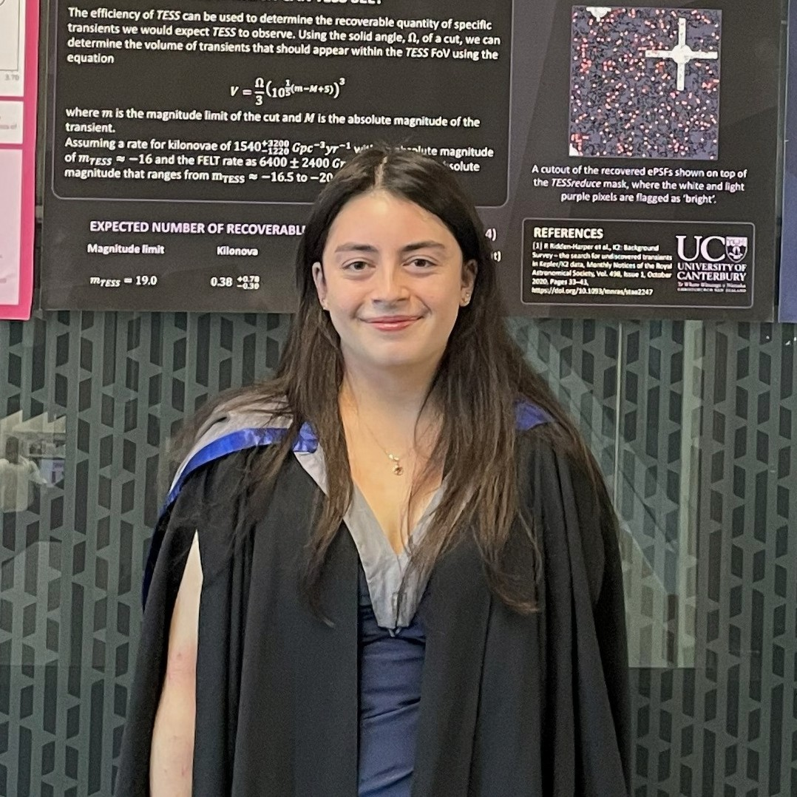

Master's Astrophysics Graduate

Current Supervisors
Dr. Ryan Ridden-Harper, Dr. Joscha Jahns-Schindler, Assoc. Prof. Michael Albrow
MSc in Astronomy
University of Canterbury
Thesis: "The Need for Speed: Modelling Fast Transients"
Supervisors: Dr. Ryan Ridden-Harper, Dr. Joscha Jahns-Schindler, Assoc. Prof. Michael Albrow
Focus: GRBs, FRBs, time-domain astronomy, simulations
BSc with Honours in Astronomy
University of Canterbury
First Class Honours
Supervisor: Dr. Ryan Ridden-Harper
BSc in Mathematics and Physics
University of Canterbury